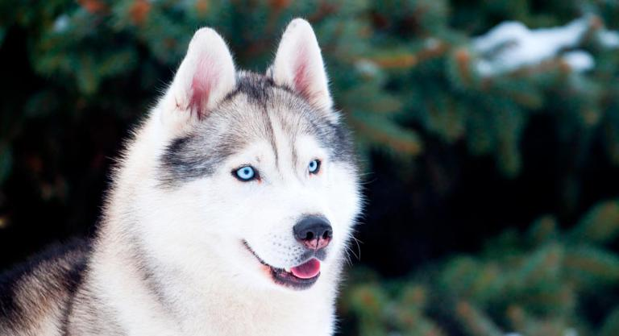
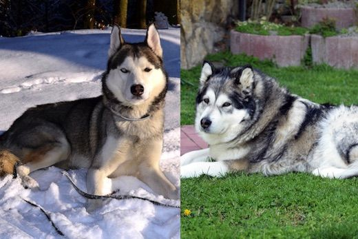
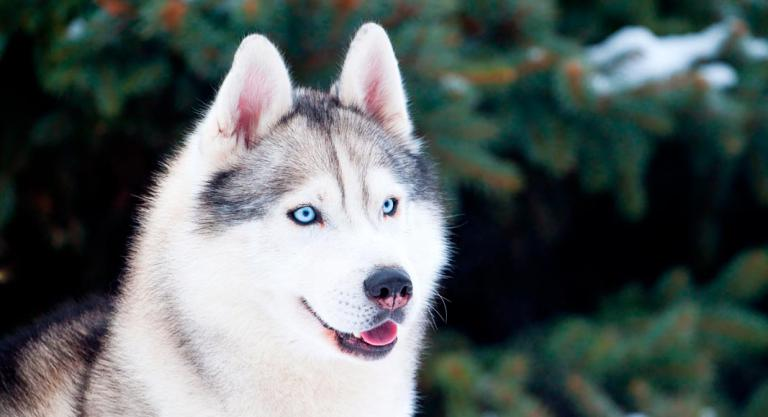
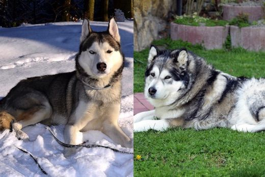

Es un perro de tamaño mediano. Acostumbrado a vivir en la nieve, tiene el pelaje mucho más denso y grueso que otras razas de perros. Es capaz de modificar drásticamente su pelaje según el lugar donde viva: puede cambiar entre pelo largo o más corto. El siberian husky puede tener estos colores: blanco, agoutí y blanco, negro y blanco, sable y blanco, rojo y blanco, gris y plata, siendo estos dos últimos más frecuentes en las hembras. En los estándares, se aceptan combinaciones de varios colores pero no un solo color completamente.
 


